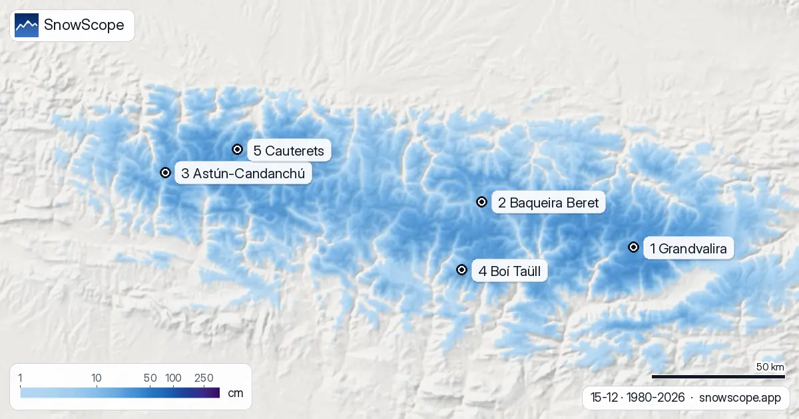
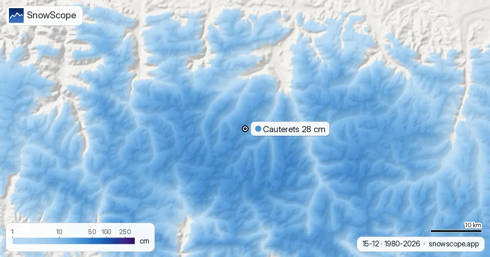

Pirenei a dicembre: confronto tra Grandvalira e le stazioni sciistiche spagnole
Stai pianificando un viaggio sugli sci nei Pirenei a dicembre 2026? Analizziamo i numeri per Grandvalira, Baqueira Beret, Astún-Candanchú, Boí Taüll e Cauterets per scoprire dove trovare la neve migliore e i prezzi più convenienti.
Le previsioni neve in tempo reale per Grandvalira nell'app SnowScopeAltezza neve, allerte powder e mappa 3D, gratis.Il confronto
I Pirenei offrono un mix di grandi e piccole stazioni sciistiche tra Andorra, Spagna e Francia. Grandvalira ha 137 km di piste mappate e 53 impianti. Sul versante spagnolo, Baqueira Beret ha 154 km di piste e 36 impianti. Astún-Candanchú offre 35 km di piste, Boí Taüll 35 km, e Cauterets sul lato francese offre 25 km di piste.
L'altitudine degli impianti varia in tutta la regione. Grandvalira va da 1.674 m a 2.619 m, con un dislivello di 944 m. Baqueira Beret si trova tra 1.504 m e 2.600 m. Astún-Candanchú va da 1.659 m a 2.272 m. Boí Taüll parte in alto a 2.039 m e raggiunge 2.747 m. Cauterets va da 1.725 m a 2.420 m.

Neve: chi vince a dicembre
Il nostro storico della neve degli ultimi 46 inverni mostra che a inizio dicembre la neve può essere poca alla base in tutte queste stazioni. A Grandvalira, la base è a 1.674 m con una profondità solita a dicembre di 9 cm e 8 cm il 15 dicembre. Baqueira Beret ha una base a 1.504 m con 8 cm a dicembre e 9 cm il 15 dicembre. Astún-Candanchú ha 18 cm di profondità solita a dicembre alla sua base di 1.659 m, che scende a 13 cm il 15 dicembre. Boí Taüll ha una base a 2.039 m con 16 cm a dicembre e 17 cm il 15 dicembre. Cauterets ha una base a 1.725 m con 23 cm a dicembre e 21 cm il 15 dicembre.
Più in alto, i numeri migliorano. A metà montagna, la profondità solita a dicembre è di 27 cm a Grandvalira, 20 cm a Baqueira Beret, 28 cm ad Astún-Candanchú, 25 cm a Boí Taüll e 33 cm a Cauterets. In cima agli impianti, Grandvalira raggiunge 45 cm, Baqueira Beret 30 cm, Astún-Candanchú 38 cm, Boí Taüll 34 cm e Cauterets 42 cm. Guardando il trend a metà montagna confrontando i primi 15 inverni con gli ultimi 15, Grandvalira è passata da 21 cm a 25 cm, Baqueira Beret da 17 cm a 20 cm, Astún-Candanchú da 29 cm a 23 cm, Boí Taüll da 22 cm a 20 cm e Cauterets da 35 cm a 23 cm.
Prezzo: chi vince
I costi ufficiali mostrano chiare differenze nei prezzi degli skipass giornalieri per la stagione 2026-27. Grandvalira fa pagare 62,50 EUR per un pass giornaliero adulto acquistato online per lunedì 14 dicembre 2026, e 72,00 EUR alla biglietteria. Baqueira Beret elenca un Baqueira Ticket giornaliero adulto a 74,00 €, un pass da 6 giorni a 359,00 € e un pass giornaliero con la carta ricaricabile Baqueira Pass a 70,00 €.
Astún-Candanchú fa pagare 54,50 EUR per un pass giornaliero congiunto adulto acquistato online e 59,50 EUR alla biglietteria, con un pass congiunto da 5 giorni a 237,00 EUR. Boí Taüll elenca un pass giornaliero adulto a 49,00 EUR. Cauterets fa pagare 46 EUR per un pass giornaliero adulto tariffa pubblica e 276 EUR per il pass da 6 giorni.
La regola di fine dicembre
La quota di inverni con 30 cm o più a metà montagna mostra perché il tempismo conta. A Grandvalira, quella quota passa dal 30 percento nella prima settimana di dicembre fino al 65 percento tra il 22 e il 28 dicembre. A Baqueira Beret, passa dal 22 percento al 41 percento. Ad Astún-Candanchú, va dal 35 percento al 63 percento. A Boí Taüll, sale dal 35 percento al 54 percento. A Cauterets, va dal 43 percento al 67 percento. Aspettare le settimane successive offre probabilità molto migliori di copertura nevosa.
Verdetto per tipo di viaggio
Se vuoi un'area grande e la neve abituale di dicembre più alta in vetta di questo gruppo, 45 cm, Grandvalira è un'ottima scelta, specialmente se prenoti il pass online in anticipo. Se preferisci un budget più contenuto sul versante spagnolo, Boí Taüll offre un pass giornaliero a 49,00 EUR con una base alta a 2.039 m. Per i viaggiatori che guardano a Cauterets in Francia, il pass giornaliero da 46 EUR si abbina a una profondità solita a dicembre in vetta di 42 cm.
Consigli per sciatori
- Prenota il tuo pass Grandvalira online prima dell'arrivo per pagare 62,50 EUR invece dei 72,00 EUR della biglietteria.
- Punta alla settimana dal 22 al 28 dicembre per la quota più alta di inverni con 30 cm o più di neve a metà montagna in tutte le stazioni.
- Controlla il bollettino valanghe prima di andare fuori pista in una qualsiasi di queste aree.
- Scegli stazioni con base alta come Boí Taüll a 2.039 m se viaggi durante le settimane scarse di inizio dicembre.
- Usa i siti ufficiali delle stazioni per verificare le date operative esatte e il numero di impianti attivi per dicembre 2026.
Altre mappe (siti esterni)
Riferimenti e crediti
- Grandvalira, official ski pass booking (online price for 14 December 2026, read 2026-11-13) www.grandvalira.com/en/ski-pass/day
- Baqueira Beret, official prices (tarifas), season 26-27 www.baqueira.es/es/tarifas
- Astún, official lift pass prices (tarifas 26-27) astun.com/forfaits/
- Boí Taüll, official lift pass prices (tarifes) pirineu365.cat/boitaull/estacio/tarifes/
- N'PY, Cauterets official ski pass prices 2026-27 www.n-py.com/fr/cauterets/forfaits-ski
- SnowScope, December snow at three heights and today's snow map snowscope.app/
Su questi numeri
Numeri della neve: storico neve SnowScope, 46 inverni passati (1980-81 - 2025-26) a tre quote di ogni località (un modello del passato corretto per la quota: una stima per un'area, non misure della località); dati di dicembre calcolati dalle altezze giornaliere di quegli inverni. Neve attuale e tendenza a due settimane: previsioni SnowScope (tendenza da ECMWF e GFS, un intervallo, non una promessa). Impianti e piste: mappatura OpenSkiMap. Prezzi: le pagine ufficiali qui sotto, lette il 2026-11-13; i prezzi possono cambiare, verificare prima di prenotare.
Cita questo articolo
Per ricerca, didattica o stampa: numeri e grafici sono liberamente riutilizzabili con licenza CC BY 4.0 citando così.
SnowScope (2026), Pirenei a dicembre: confronto tra Grandvalira e le stazioni sciistiche spagnole, https://snowscope.app/blog/it/2026/11/andorra-vs-spanish-pyrenees-december-ski-2026.html, consultato il 2026-11-14
SnowScope (Atlas Labs). (2026, November 14). Pirenei a dicembre: confronto tra Grandvalira e le stazioni sciistiche spagnole. SnowScope snow reports. https://snowscope.app/blog/it/2026/11/andorra-vs-spanish-pyrenees-december-ski-2026.html
BibTeX
@misc{snowscope2026andorravsspanishpyrenees,
author = {{SnowScope (Atlas Labs)}},
title = {Pirenei a dicembre: confronto tra Grandvalira e le stazioni sciistiche spagnole},
year = {2026},
month = nov,
howpublished = {\url{https://snowscope.app/blog/it/2026/11/andorra-vs-spanish-pyrenees-december-ski-2026.html}},
note = {Published 2026-11-14 15:21 UTC; accessed 2026-11-14}
}· CC BY 4.0 · Metodi, dati e strumenti →
Grandvalira: neve e temperatura per quota, quest'inverno vs lo scorso (strumenti) →
Segui Grandvalira
Gratis: un messaggio quando arriva la neve e il meteo ogni mattina.
Altri bollettini neve

Per una settimana bianca in famiglia a basso costo a dicembre ad Astún-Candanchú, punta a fine dicembre, quando le piste in quota hanno buona neve nel 67 % degli inverni passati.

Andorra non ha un grande aeroporto: come raggiungere Grandvalira da Barcellona o Tolosa, il tunnel dell'Envalira, la CG2 e i parcheggi.

Cauterets offre 25 km di piste per 46 EUR, ma la nostra storia della neve mostra che la migliore possibilità di trovare copertura è l'ultima settimana di dicembre.